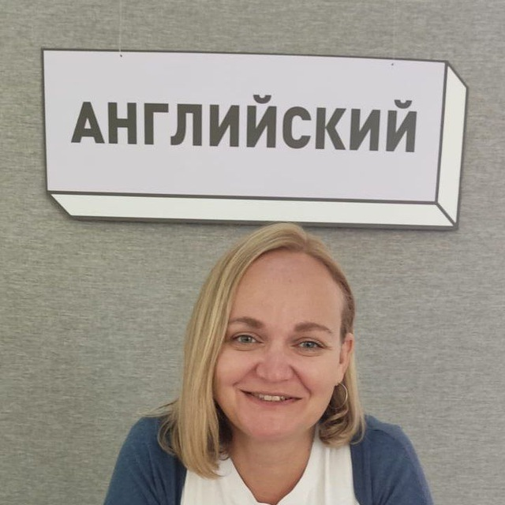

🇬🇧 Английский для IT и жизни (EFL)
Разговорный английский для работы, прохождения собеседований в зарубежные компании, созвонов и путешествий. Коммуникативный метод — говорим с первого дня.
Опытный преподаватель предлагает индивидуальные уроки английского и русского языков, а также подготовку к ИТ-интервью и разговорный клуб.
Высококвалифицированный преподаватель английского и русского языков
Привет! Я Юлия — опытный преподаватель английского и русского.
Преподаю английский как иностранный (EFL) и русский как иностранный (RFL) для всех уровней — онлайн и очно. Моя цель — помочь вам говорить естественно, уверенно и с удовольствием.
Работаю со взрослыми и подростками от 14 лет. Помогу начать с нуля или улучшить беглость для работы в международных компаниях и релокации.

Английский для IT, релокации и жизни — индивидуальные уроки под ваши цели
Разговорный английский для работы, прохождения собеседований в зарубежные компании, созвонов и путешествий. Коммуникативный метод — говорим с первого дня.
Russian as a foreign language for beginners and intermediate learners. Perfect for English and Spanish speakers who want to learn Russian with a patient, structured approach.
Real conversations, not boring drills. You practice speaking in every lesson.
Lessons adapted to your level, goals, and schedule — online or offline.
A safe space where you never get scolded for mistakes — errors are a natural step on the road to fluency.
Launching soon — online and offline in Montevideo
Запускаю разговорный клуб для тех, кому нужно больше практики языка. Внимание: занятия проходят в ваше дневное и обеденное время (с 12:00 до 16:00 по Минску/Москве/Тбилиси/Лимасолу), что идеально подходит для совмещения с работой!
Join from anywhere. Practice English with other learners in a friendly group session via video call.
Meet in person in Montevideo. Chat in English, discuss interesting topics, and build confidence together.
Schedule, pricing, and registration details are posted on my Instagram and Telegram — follow the links below to stay updated!
Flexible options — learn online or meet in person
Via Google Meet or Telegram. Perfect if you're anywhere in Uruguay or abroad.
Face-to-face lessons for those who prefer in-person learning.
One teacher, two languages. Study English or Russian — or both.
Extensive experience and ongoing professional development.
Maximum speaking time. Natural grammar through real communication.
Music, films, series and books as learning tools — vocabulary and grammar that actually stick.
Learn English as a foreign language or Russian — with the same caring, structured approach.
Book lessons at a time that suits you — mornings, evenings, or weekends. Fully adaptable to your routine.
Regular feedback and clear milestones so you can see your improvement lesson by lesson.
"Julia helped me overcome my fear of speaking English. Her lessons are always interesting and relaxed."
"Great teacher! Clear explanations, lots of conversation practice. I feel much more confident now."
"No boring grammar exercises — just real conversation. My speaking improved tremendously!"
I offer offline English lessons in Montevideo, Uruguay, as well as online lessons via Google Meet or Telegram for students anywhere in the world.
Yes! I teach both English as a foreign language and Russian for levels A1–B2. Lessons are available online and offline.
The English conversation club is launching soon with online and offline sessions. Follow me on Instagram or Telegram for schedule and registration details.
I work with beginners through upper-intermediate learners (A1–B2), both adults and teenagers from 14 years old.
Feel free to reach out in any way that's convenient for you — all contact options are available in the Contacts section below.
Ready to start English or Russian lessons? Reach out — I'll be happy to help!
I reply personally — let's speak with confidence!